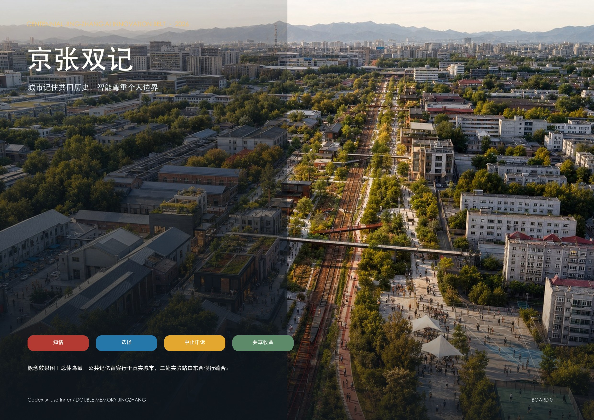
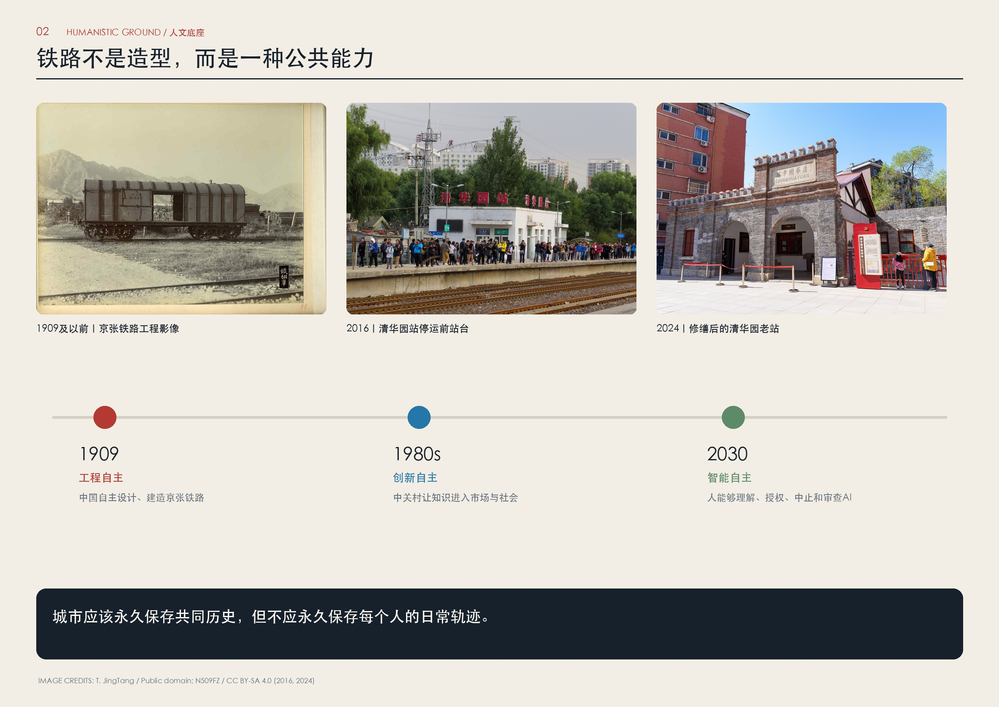
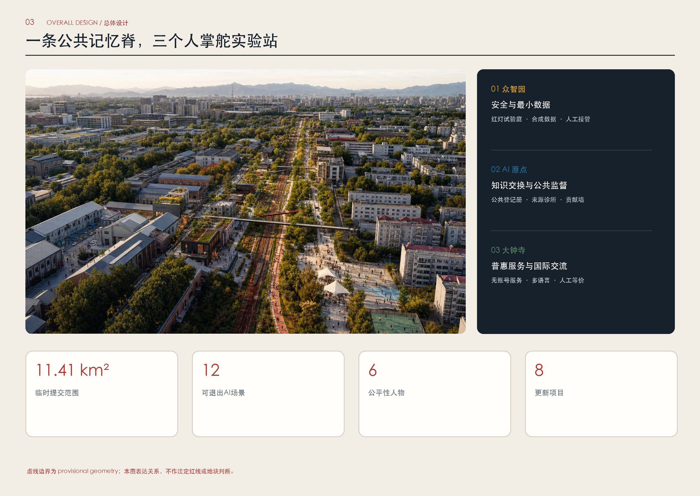
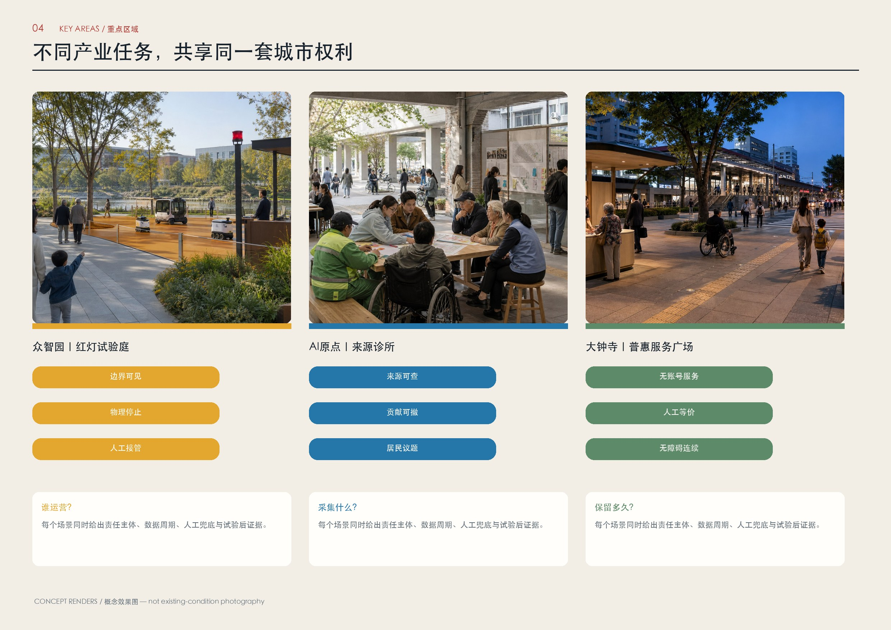
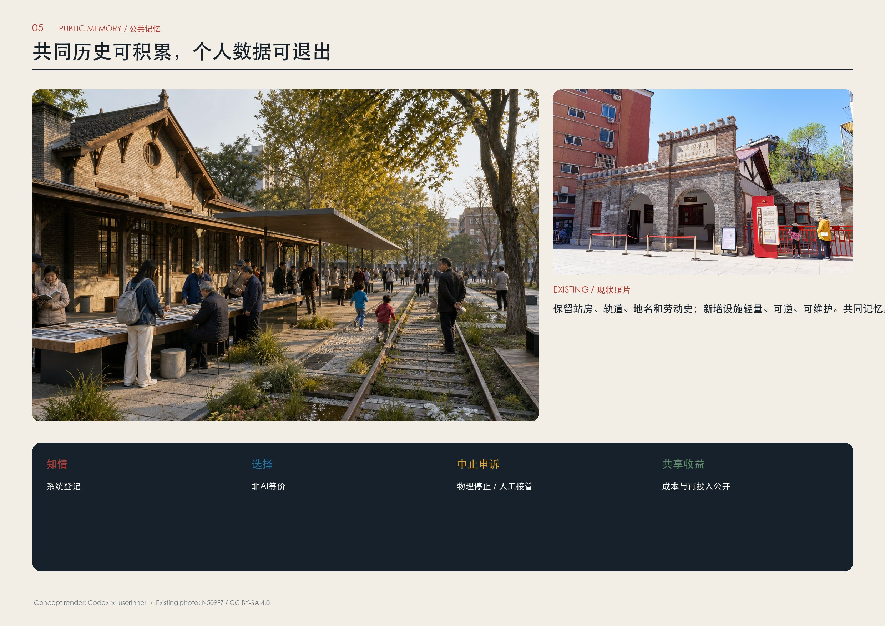
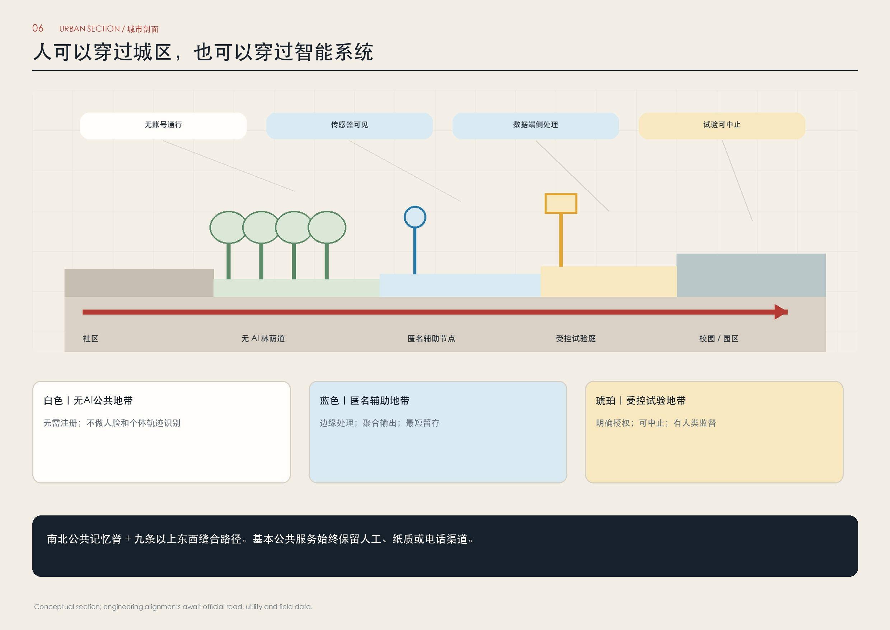
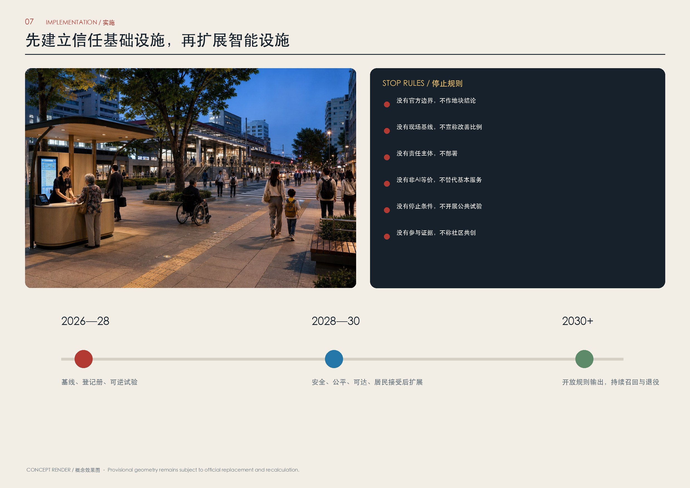

总览地图







AI场景
AI 场景：十二个服务—数据—人工兜底闭环，详见展板 04—07。
核心指标
11.41 km²provisional area
12.34%concept green ratio
7.33%concept public space
12 / 6 / 8scenarios / personas / projects
任务覆盖
agent.1–agent.6 · overall concept · ecosystem · AI+ scenarios · public space · culture · long-term operation
自检状态
deterministic、spatial、visual、professional evidence 四项检查均须通过。
来源
历史照片来源与许可见 sources.json 和版权声明；概念效果图不得解释为现状。
假设
官方边界、现场基线、权属、市政、文保和运营责任仍待确认。